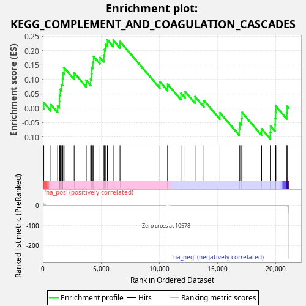
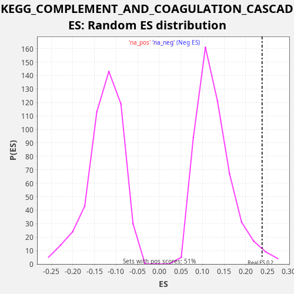

| Dataset | CCLE |
| Phenotype | NoPhenotypeAvailable |
| Upregulated in class | na_pos |
| GeneSet | KEGG_COMPLEMENT_AND_COAGULATION_CASCADES |
| Enrichment Score (ES) | 0.23795068 |
| Normalized Enrichment Score (NES) | 1.8563184 |
| Nominal p-value | 0.02357564 |
| FDR q-value | 0.111424334 |
| FWER p-Value | 0.632 |

| SYMBOL | RANK IN GENE LIST | RANK METRIC SCORE | RUNNING ES | CORE ENRICHMENT | |
|---|---|---|---|---|---|
| 1 | C4BPB | 82 | 4.248 | 0.0188 | Yes |
| 2 | SERPINE1 | 691 | 0.036 | 0.0127 | Yes |
| 3 | C8G | 1270 | 0.005 | 0.0080 | Yes |
| 4 | CR2 | 1427 | 0.004 | 0.0234 | Yes |
| 5 | C3AR1 | 1434 | 0.004 | 0.0458 | Yes |
| 6 | BDKRB1 | 1494 | 0.003 | 0.0657 | Yes |
| 7 | CFI | 1626 | 0.002 | 0.0822 | Yes |
| 8 | C4A | 1700 | 0.002 | 0.1015 | Yes |
| 9 | C1S | 1727 | 0.002 | 0.1230 | Yes |
| 10 | A2M | 1827 | 0.001 | 0.1410 | Yes |
| 11 | C4B | 2690 | 0.000 | 0.1229 | Yes |
| 12 | SERPING1 | 3728 | 0.000 | 0.0964 | Yes |
| 13 | C5AR1 | 4106 | 0.000 | 0.1012 | Yes |
| 14 | F3 | 4189 | 0.000 | 0.1201 | Yes |
| 15 | SERPINF2 | 4208 | 0.000 | 0.1420 | Yes |
| 16 | PROC | 4300 | 0.000 | 0.1604 | Yes |
| 17 | CFD | 4355 | 0.000 | 0.1805 | Yes |
| 18 | TFPI | 4910 | 0.000 | 0.1770 | Yes |
| 19 | PROS1 | 5250 | 0.000 | 0.1836 | Yes |
| 20 | SERPIND1 | 5295 | 0.000 | 0.2043 | Yes |
| 21 | C5 | 5407 | 0.000 | 0.2217 | Yes |
| 22 | CD55 | 5545 | 0.000 | 0.2380 | Yes |
| 23 | VWF | 6042 | 0.000 | 0.2371 | No |
| 24 | CD46 | 6627 | 0.000 | 0.2322 | No |
| 25 | F8 | 10056 | 0.000 | 0.0923 | No |
| 26 | FGA | 10714 | 0.000 | 0.0838 | No |
| 27 | MASP2 | 11861 | -0.000 | 0.0522 | No |
| 28 | FGG | 12217 | -0.000 | 0.0581 | No |
| 29 | CFH | 13073 | -0.000 | 0.0403 | No |
| 30 | C1R | 13838 | -0.000 | 0.0267 | No |
| 31 | F10 | 15212 | -0.000 | -0.0157 | No |
| 32 | C2 | 16865 | -0.000 | -0.0713 | No |
| 33 | BDKRB2 | 16919 | -0.000 | -0.0511 | No |
| 34 | PLAUR | 17079 | -0.000 | -0.0359 | No |
| 35 | F2R | 17110 | -0.000 | -0.0146 | No |
| 36 | F12 | 18787 | -0.000 | -0.0714 | No |
| 37 | CFB | 19536 | -0.001 | -0.0841 | No |
| 38 | PLAT | 19559 | -0.001 | -0.0625 | No |
| 39 | C3 | 19945 | -0.004 | -0.0580 | No |
| 40 | PLAU | 19958 | -0.004 | -0.0358 | No |
| 41 | CD59 | 19996 | -0.004 | -0.0149 | No |
| 42 | F5 | 20016 | -0.005 | 0.0070 | No |
| 43 | THBD | 20962 | -1.540 | -0.0151 | No |
| 44 | SERPINA1 | 20978 | -1.801 | 0.0069 | No |

{kind=link}
{kind=link}